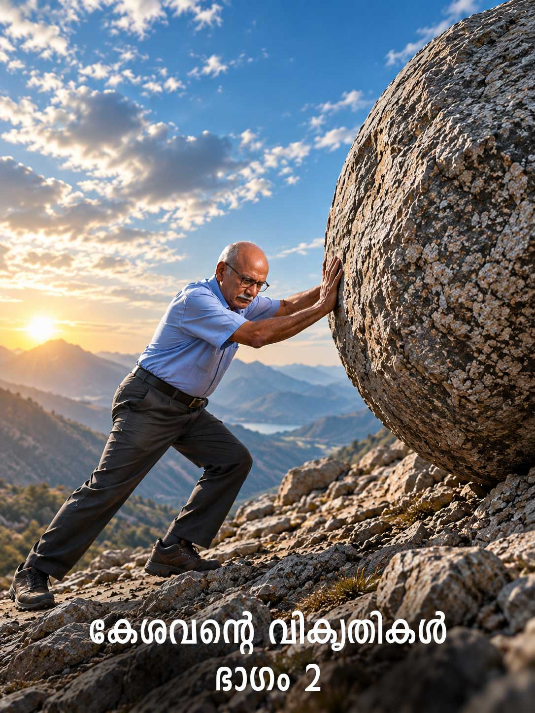
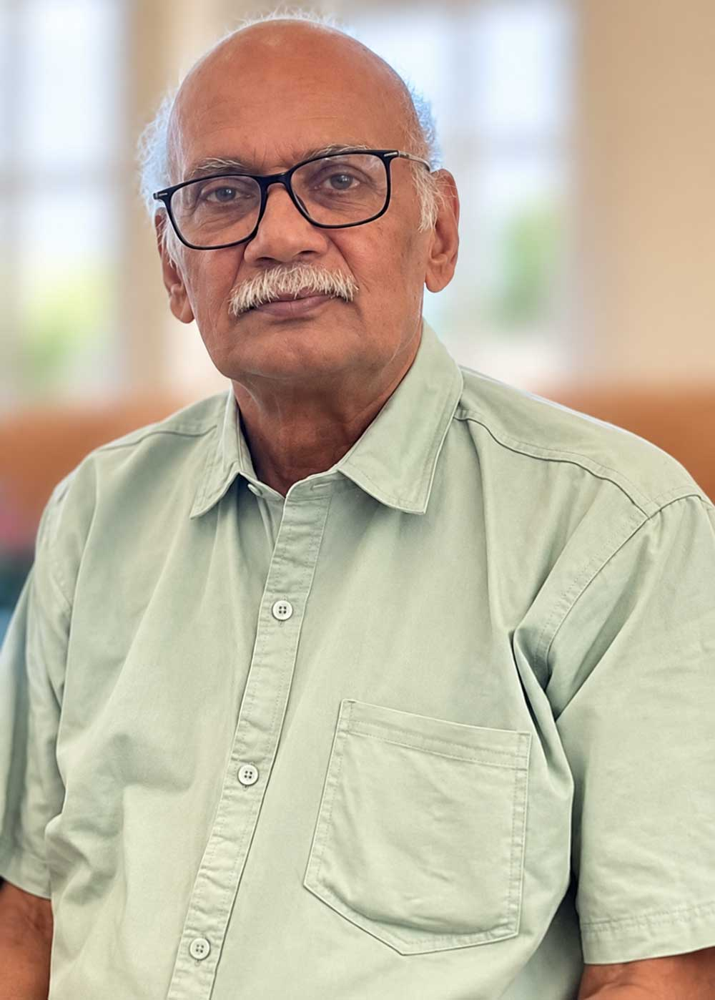

01 / സാമൂഹികം
കവിതയിലേക്ക് ↗ഉപ്പിട്ട കലം
കാലത്തിന്റെ രാഷ്ട്രീയവും വിശപ്പിന്റെ യാഥാർഥ്യവും കഠിനമായ പരിഹാസത്തോടെ.
കേശവൻ ഊരാളത്ത്
ഗ്രാമജീവിതത്തിൽ നിന്നും പൊതുസമൂഹത്തിന്റെ ചൂടിൽ നിന്നും പിറക്കുന്ന കവിതകൾ. ചിരിയിലും വിമർശനത്തിലും ഓർമ്മയിലും മനുഷ്യനെ തിരയുന്ന ഒരു എഴുത്തുയാത്ര.


“ജീവിതം സ്വസ്ഥം, സുന്ദരം.”
ചുള്ളിയോട് · നിലമ്പൂർഞാൻ കേശവൻ ഊരാളത്ത്. അച്ഛൻ ടി പി ബാലകൃഷ്ണൻ നായർ. അമ്മ ഊരാളത്ത് നാരായണി അമ്മ. രണ്ടുപേരും ഇന്നില്ല. എനിക്ക് 4 സഹോദരന്മാരും 2 സഹോദരിമാരും ഉണ്ട്. എന്റെ ഭാര്യ കെ വിലാസിനി. മക്കൾ രാജേഷ്, വിജേഷ്, ജിഷ. മരുമക്കൾ നിഷ, നീതു, ശശികുമാർ. പേരക്കുട്ടികൾ നിരഞ്ജന, മാനസ്സ്, ശ്രേയസ്സ്, സിദ്ധാർഥ്, നിവേദിത. ഇടത്തരം കുടുംബം.
ഞാൻ 11 വർഷം എൽ പി സ്കൂളിലും 22 വർഷം യു പി സ്കൂളിൽ ഹെഡ്മാസ്റ്ററായും ജോലി ചെയ്തു. ഇപ്പോൾ വിശ്രമത്തിലാണ്. പെൻഷൻ പറ്റിയിട്ട് ഇരുപത്തിരണ്ടു വർഷമായി.
ഗദ്യങ്ങൾ പദ്യത്തിലാക്കുകയെന്നത് വിദ്യാർത്ഥിയായിരിക്കുമ്പോൾ മുതൽ എന്റെ ഹോബിയാണ്. അതിൽ ചിലപ്പോൾ ചില കവിതാശകലങ്ങളും കടന്നുകൂടാറുണ്ട്. ഇക്കാലത്തിനിടയ്ക്ക് കണക്കറ്റ പദ്യങ്ങൾ സൃഷ്ടിച്ചിട്ടുണ്ട്. എന്റെ ആദ്യ സമാഹാരം എന്റെ എഴുപത്തെട്ടാം വയസ്സിൽ വെളിച്ചം കണ്ടു. “കേശവന്റെ വികൃതികൾ” എന്ന പേരിൽ രണ്ടാം പുസ്തകം താമസിയാതെ പുറത്തിറങ്ങാനിടയുണ്ട്.
അദ്ധ്യാപനം എന്റെ ഇഷ്ട വിഷയമാണ്. ആദ്യത്തെ എൽ പി കാലഘട്ടത്തിൽ ഞാനത് നന്നായി ആസ്വദിച്ചു. സുപ്രസിദ്ധ മാന്ത്രികൻ ഗോപിനാഥ് മുതുകാടടക്കം പ്രഗത്ഭരായ നിരവധി ശിഷ്യന്മാരോടൊത്ത് ക്ലാസുകൾ പങ്കിടാൻ എനിക്കു കഴിഞ്ഞിട്ടുണ്ട്. പ്രധാനാധ്യാപകനായതോടെ സ്കൂളിന്റെ ഭൗതിക, പഠന, പാഠ്യേതര വിഷയങ്ങളിൽ കൂടുതൽ ശ്രദ്ധ പതിപ്പിക്കേണ്ടി വന്നതിനാൽ അദ്ധ്യാപനത്തിന്റെ മാധുര്യം അനുഭവിക്കുന്നതിൽ പരിമിതികളുണ്ടായി എന്നതാണ് എന്റെ സ്വകാര്യ ദുഃഖം. ജോലിയ്ക്കിടയ്ക്ക് വിവിധ സംഘടനകളിൽ സജീവമായി പ്രവർത്തിയ്ക്കാൻ എനിക്കു കഴിഞ്ഞിട്ടുണ്ട്. ഇപ്പോൾ കേരള സ്റ്റേറ്റ് സർവീസ് പെൻഷനേഴ്സ് യൂണിയന്റെ നിലമ്പൂർ ടൗൺ ബ്ലോക്ക് പ്രസിഡന്റായി പ്രവർത്തിക്കുന്നു.
ഓർമ്മ, പ്രകൃതി, കുടുംബം, സമൂഹം — കേശവന്റെ കവിതകൾ പല വാതിലുകളിലൂടെ ഒരേ മനുഷ്യജീവിതത്തിലേക്ക് കടക്കുന്നു.
കാലത്തിന്റെ രാഷ്ട്രീയവും വിശപ്പിന്റെ യാഥാർഥ്യവും കഠിനമായ പരിഹാസത്തോടെ.
മനുഷ്യന്റെ കൈകളിൽ മുറിവേൽക്കുന്ന ഭൂമിയുടെ മുന്നറിയിപ്പ്.
ഒരു അധ്യാപകനോടുള്ള ആത്മബന്ധത്തിന്റെ നീണ്ട, സ്നേഹമുള്ള ഓർമ്മ.
കേശവൻ ഊരാളത്തിന്റെ പദ്യശ്രവണങ്ങൾ ഇവിടെ കേൾക്കാം. മൂന്ന് ഓഡിയോകൾ കൂടി കേട്ടുകൊണ്ടുപോകാം.
“നമ്മൾ ജീവിക്കുന്ന കാലം തന്നെ— കേശവൻ ഊരാളത്ത്
ഒരു കവിതയാണ് — വായിച്ചു തീരാത്തത്.”
ഈ കവിതകളെക്കുറിച്ചുള്ള നിങ്ങളുടെ ചിന്തകളും ഓർമ്മകളും എഴുത്തുകാരനിലേക്ക് എത്തട്ടെ. പുസ്തകത്തെക്കുറിച്ച് കൂടുതൽ അറിയാൻ ബന്ധപ്പെടുക.
കവിതകൾ, ജീവിതം, വായന — ഒരു തുറന്ന സംഭാഷണം.